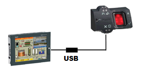

|
|
|
|
|
|
|
|
The Biometric Switch is Schneider Electric's XB5S external hardware device that provides the security and convenience of logging users into a target machine by scanning their fingerprints, with or without providing user names and passwords. For example, at build time you can set a security user group authentication to either password or fingerprint. To log in to the target machine at run time, members of this security user group can use the System Login Panel and provide their user names and passwords, or they can just scan their fingers on the biometric switch.

For information on how to enable security groups with fingerprint authentication, see Section 4.8.2.5, Setting Up Security Group Authentication.
In Vijeo Designer 6.1 SP2 or later, when you create a new project, a central Project User List is generated that stores user names, passwords, and fingerprint data for all the users in that project. The users in the Project User List are accessible across all targets in the project.
To capture and store fingerprint information for projects created in previous versions of Vijeo Designer, you need to upgrade the project to have the Project User List. For more information, see Section 24.9.3, Upgrading Existing Projects to Include Fingerprints.
Connect the biometric switch cable to the target machine or the editor PC's USB port.

You can only connect one biometric switch to the target machine and to the editor PC.
Vijeo Designer build time supports both Schneider Electric Biometric Switch XB5S and MorphoSmart™ MSO1300. At run time, only Schneider Electric Biometric Switch XB5S is supported.
You must manually install the Biometric Switch USB driver to iPC target machines, Vijeo Designer does not check if the Biometric Switch USB driver is present on the iPC. To install the driver, use Runtime Installer for Windows on the Vijeo Designer DVD.
Not all target machines support the biometric switch. For a list of supported target machines, see Appendix 5, Hardware Specifications.
To erase the content of the biometric switch:
Connect the biometric switch to the editor PC.
In the Navigator window's Project tab, click the Project node.
From the Tools menu, click Clear Biometric Switch.
Click Identify Device. The red LEDs on the biometric switch flashes, identifying the device you are about to delete.
Click Delete.